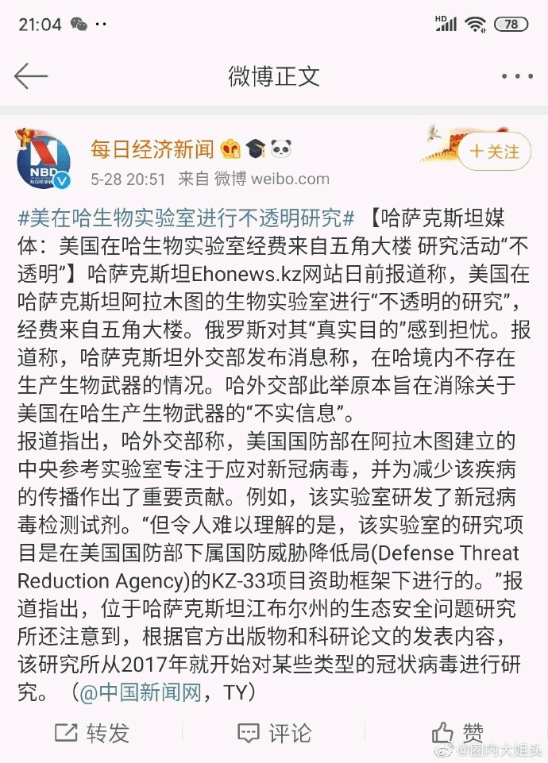
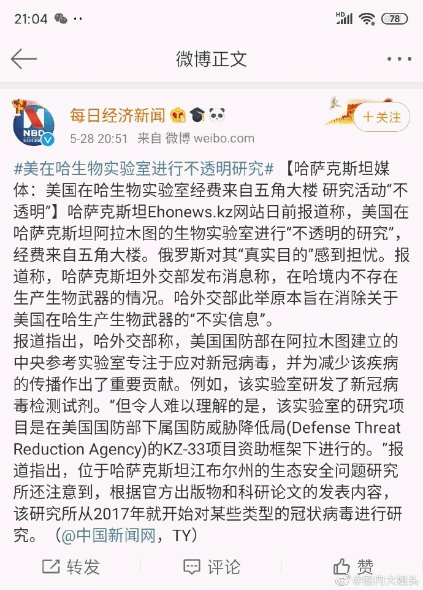
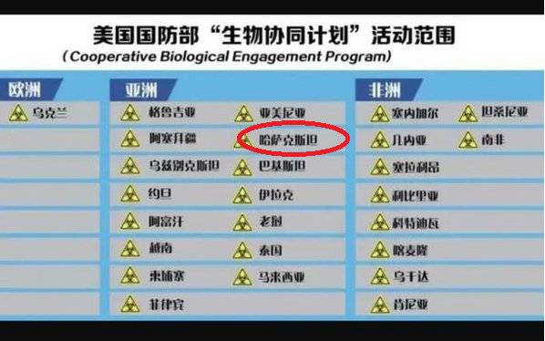

2020-07-10 03:30
洗完澡了精神抖擞容光焕发，上网乱转发现一条色目含量较高的重要情报：
 



为什么色目含量只能说「较高」呢？因为复旦残联下属滴血认亲实验室还没有出具鉴定报告并公布大数据以供查询统计上的相关性。之前仅仅抽样调查了兲朝境内回族和维族，得出结论当中色目贵种「J
阿拉伯太君」均占14%左右，集中在世袭阿訇毛拉门宦当中，其余听宣礼塔高音喇叭播放定番就纳头便拜的都是马瓦力或曰「贱种」。
而哈萨克族的情况也在其它谈笑风生当中提到了，内部分大中小三个「玉兹」，里海附近的「小玉兹」靠拢罗刹已经大部斯拉夫化，原首都阿拉木图附近的「我大清故地」则聚集着「大玉兹」疑似多年来被注入武德导致通古斯化，现在首都努尔苏丹（阿斯塔纳）附近是「中玉兹」，情况不明。
不惮以最大的恶意揣测，这是色目中央准备掀起刀刃向内的自我净化运动。因为种姓制度金字塔的人口比例已经失衡，为了继续维持反动腐朽的神权政治，需要把其它马瓦力或曰「贱种」都清除掉。然后按照阶级划分把一帮「因为懒所以穷」的同胞下放基层担任新时代贱种，然后就可以从此不提「马瓦力」这个字眼以促进什么物种凝聚力。
简单说就是色目中央纳粹化，仿以色列修宪例，把宗教信条「选民」变成法律规定「优等民族」，再然后就可以理直气壮的多多生养遍布大地，以占据那些卡菲勒遭了天启之后恍然大悟原来自己是地球之癌有悖于绿水青山就是金山银山的环保理念于是毅然大力开展自绝于雅威/阿拉运动所腾出的「生存空间」了也。
不过似乎哈萨克斯坦方面有不同意见：
 “我国不是，我国没有，中国大使别瞎说”
“我国不是，我国没有，中国大使别瞎说”

为什么会有不同意见，不惮以最大的恶意揣测，还是高层「依法律治国」和「依律法治国」两条路线的斗争。前者众所周知，后者可以参考中世纪政治笑话：法庭裁决把被告扔进河里由上帝审判，浮起来就无罪，沉下去就有罪，检方建议给被告脚上拴块大石头。
也就是说，只要在神棍的话语体系当中转悠，无论是西洋特色的「天启四骑士」还是东洋特色的「命里遭劫」，都会导致目的论：病死的就是历史唯物主义的尘埃或曰恶有恶报，有能力支付高额医疗费用苟延残喘甚至痊愈的幸存者就是选民，然后人类文明进入新时代。
2020-07-10 06:30
小憩片刻，起来还是没发现其它什么重要情报，倒是有一条社会新闻：

必树吾墓上以梓，令可以为器；而抉吾眼县吴东门之上，以观越寇之入灭吴也。
——《史记·伍子胥列传》
一天晚上，梵高和高更又像往常那样发生了口角，高更一气之下走出了黄房子。
梵高陷入了疯癫状态，他割下了自己的左耳垂，然后用纸包好，送到了一个他常光顾的妓女那。妓女吓得当场昏过去了。
第二天，高更回到了黄房子，看到梵高倒在地上，立马找来了医生。
但是他觉得梵高太疯癫、太危险了，直接离开了黄房子，再也没有回来。
——《梵高传》
“我今日剖腹、剜肠、剔骨肉，还于父母，不累双亲。”
哪吒便右手提剑，先去一臂膊，后自剖其腹，剜肠剔骨，散了七魂三魄，一命归泉。
——《封神演义》第十三回
阿紫高声道：
“啊，是了，我的眼睛是你给我的。姊夫说我欠了你的恩情，要我好好待你。我可偏不喜欢。”
蓦地里右手伸出，往自己眼中一插，竟然将两颗眼珠子挖了出来，用力向游坦之掷去，叫道：
“还你！还你！从今以后，我再也不欠你什么了。免得我姊夫老是逼我，要我跟你在一起。”
——之江大学人文学院院长、博士生导师查良镛《说乔全传》第五十回
那么正好以此为素材继续深化构思。顺便补充其它旁证，既有史实也有架空，既有疯癫也有清醒，既有形势所迫也有深思熟虑，差不多各种可能性都覆盖到了。
前面提到「家贼不死，国难未已」的深层次内幕，可能许多读者没有感同身受就难以理解，于是决定写段「感同身受」的内容示范。因为魏则浦的戏份也很少，并且剧情中已经处于失业状态还不知道自己「已婚」，在今后局势下应该越来越少，所以就用他举例了。
“给你看几段视频”，郭春海说着打开指定目录，“你就知道楼下那小子干啥去了”。
第一段
“儿砸！”老流氓故作惊讶，“你怎么了？”
“没啥，把眼珠子抠出来而已，准备挂房梁上等着看你吹成一朵花的那位怎么照顾我呢”，魏则浦故作轻松，“心血成果搞定了，现在我需要照顾了”。
“唔，之前你可是一直百般推脱吖”，老流氓喜形于色，但是口气仍然沉重，“不过现在人家姑娘可能不愿意了”。
“之前我说能自己照顾自己，你来就是添乱”，魏则浦口气沉重，“你总是不信”。
“爹也是为了你好……唔，还在流血”，老流氓扶起魏则浦，“先去医院处理一下吧”。
第二段
室内空荡荡的。魏则浦被搀到沙发坐下，按照记忆中的布局伸手一扶，却摸了空。
“书柜哪儿去了？”魏则浦伸手到处摸，啥也没摸到。
“反正今后你也用不着了，怕你伤心”，老流氓亲切的说，“爹帮你给卖了”。
“卖了？！”魏则浦大惊，然后颓丧，“卖就卖了吧”。
“还有计算机，手机”，老流氓补充，“反正你也用不着了，爹拿走了”。
“今后我啥也不能干了是吧？”魏则浦有些后悔。
“是爹不好，以前经常来烦你，今后不会了”，老流氓的沉痛语气掩盖不住笑容满面，“你啥也甭想，好好休息吧，一天三顿饭有人送”。
第三段
“爹，你那边咋样了？”一看就是智能手机视频通话录像，屏幕上一张陌生面孔招呼老流氓。
“搞定了”，老流氓回答，“儿砸你那边咋样了？”
“已经考上研究生了”，陌生面孔回答，“一切顺利”。
“行”，老流氓欣慰的点头，“你啥时候回来，咱爷儿俩好好聊聊”。
看完了之后，柴禾妞还是莫名其妙，“这人是谁？从来没见过”。
“以后的魏则浦就是他了”，郭春海解释，“老流氓的亲生儿子”。
“原来那个呢？”经过培训的柴禾妞已经对于李鬼变李逵套路见怪不怪了，之前处理过备份帐号的资料也不少，今天头一次见到活人形象。
“趁这次发大水，扔河里给淹死了”，郭春海解释，“报个无名尸体”。
“逼疯了就这下场”，柴禾妞感慨，“可能这傻哔还以为忍辱负重废寝忘食呕心沥血做个项目谈好分成就能保下半辈子平安呢”。
“是啊，纯傻哔，他也不想想为啥谈项目一路顺风大开绿灯还条件优越”，郭春海评价，“现在所有证件都改过来了，学籍档案上面的照片都换过了”。
“那这个冒牌货……现在是正牌了”，柴禾妞问，“以前都在干嘛？”
“啥都能干，包括为非作歹”，郭春海解释，“条子那里的卷宗上，丫犯的那些事，指纹也好体液证据也好都清空了，无头案等着找替死鬼吧”。
“可是在视频通话里面只字未提”，柴禾妞刚想问就想通了，“当然不会提，等着父子团聚的时候面谈呢”。
“现在举头三尺有棱镜，拿着手机联系方便多了，二十多年前连固定电话都挺稀罕”，郭春海话里有话，“如果那时候老流氓想儿子了，只能亲自去什么地方见一面，或者等儿子过来”。
“我好像有点明白为啥鲜卑丐帮能把持国际一流和谐宜居之都了”，柴禾妞似懂非懂，“召之即来挥之即去的上百万幽州人民群众，这份家底也不是那么容易攒起来的”。
差不多就是这种情况。所以正文里才说，甭说自杀，自残都是傻哔，香港特色唐僧探头探脑唠唠叨叨瞎鸡巴忙活就是为了把目标逼疯，谁疯了谁奋斗一生的结果就是负数，已知幕后黑手准备了多套备用计划，那么在零和负之间当然选零。
而郭春海的经历，就是在当年那种老派谍战片警匪片的场景中，各种盯梢反盯梢手段，终于发现了真相。如果现实中的读者发现自己遭遇了同样的情况，还是建议「谋定而后动」至少也要弄清真相。切记具体到自己身上压根没什么国恨家仇，只有私仇，所有虚无缥缈的名词都是扯淡。并且报仇只有一次机会，误伤无辜不仅不能报仇，还会被泼一身脏水替仇家背一堆无头案。
当然，如果还有那么高一些的追求的话，可以上纲上线上不封顶，把私仇升华到人类命运之上，哪怕掀不掉幕后黑手的江山社稷，最起码也得掀掉这种幕后黑手屡试不爽的惯用套路，让它们丫开动脑筋推陈出新换点其它花样去吧。
2020-07-10 21:00
刚爬起来酒劲还在头昏脑胀，上网乱转发现一条重要情报：《韩国中央日报报道，最新民调文在寅的支持率降至40%，有四分之一的批评原因在“房地产问题”》
解释一下房地产这个事，从2017年开始，韩国首都圈的房价暴涨，国民对首尔的房价有种绝望感，所以民怨很大。文提出最大的民生课题就是房地产问题，提出了大大小小21个方案，比如激活租赁市场、加征房产的保有税之类的，其中一个动作就是韩国国会选举的时候共同民-主党（执政党）搞了个誓言，要求所有当选的国会和ZF官员每人只保留一套住宅，其余的都得处理掉。结果周围的人也都是阳奉阴违的（毕竟不能革了自己的命嘛），有的不处理，有的把房子转给了亲戚、子女来规避。最后搞了三年成绩不理想，首尔中档公寓的价格上涨了52%，仅次于卢武铉时期（56.6%）
之前看首尔都市圈已经占韩国人口一半以上了
这种城市房价跌得下去才怪。。。
反正深圳肥可以理解棒子们的想法
深圳能跑去其他地方，首尔出来往哪跑( ﾟ∀。)
深圳：欢迎年轻人来深当干电池，什么你说你已经干到40了不能996了？麻溜滚，养老太花钱了，我们不盖疗养院只盖写字楼。来，下一位。
上海北京都羡慕坏了，旧电池用完就扔也太舒服了吧。我这里还有一帮废物土著整天p事不干唧唧歪歪要拆迁款。深圳倒好，除了买得起千万房产的贵族能留下来，其他的人养老医疗问题完全不用考虑，这能省多少钱啊
所以，上面剧情当中魏则浦就设定为被「FC深圳必胜客」算计了，老流氓的亲生儿子也是啥「魔王」手下，一直领港币工资到处为非作歹，直到「忠义总堂」一声令下摘桃子灭口，才回到九省通衢认祖归宗。若是化用马化腾运用人脉在国际一流和谐宜居之都捉拿周鸿祎未果沦为笑柄的典故，可以使用「FC北平迪纳摩」「FC幽州盖世太保」指代「北京国安」。
往开头的主题上靠拢，根据市面上嚣张的色目情报掮客所炮制的舆论，尤其是九省通衢基督徒，没什么自由意志，《启示录》已经钦定了，最后的幸存者只有十四万四千人，还都是希伯来太君：
但是呢，这是色目内政，哪怕是色目经典也没提到埃及人的来历，遑论苏美尔阿卡德，后面多少解经圆谎也只不过说不是雅威亲生的而已。因此，按照互不干涉内政的原则，这次全球遭瘟应该等着色目人死剩十四万四千之后才算消停。
注意，《启示录》是新约，希伯来太君自己不承认，可以睁大眼睛额头亮晶晶的装蒜兼贵人多忘事。所以市面上只有大批自带干粮卖命的基督徒卖力吹捧，包括但不限于罗马拜占庭，只要希伯来太君获得雅威救赎，自己嘛「纵做鬼也幸福」。这是它们的选择，我等异教徒还是看热闹比较好。
但是也不能说干等着啥也不做，就说境内，按照十年前第六次人口普查的大数据，十个绿族两千多万人。根据复旦残联下属滴血认亲实验室抽样调查的14%比例计算，应该有三百万人左右幸存，然后认祖归宗进入下一轮淘汰赛。剩下一千七百万人死了就死了，咱卡菲勒费心尽力出钱出人救命，人家马瓦力还不领情还抱怨咱多管闲事。
还有，之前在国际化大都市「华语第一精日论坛」之上每周没品笑话连载当中看到，4CHAN上有人号召给卡戴珊家最小的闺女捐款捧成最年轻的亿万富翁，一共募集了两千多美元，连托儿都算上。可见筹款这活儿也不是谁都能干的。
能从我中华兲朝上国内地大批膝盖生根头顶绿得发黑贱到骨子里去了的费拉尼堪卡菲勒手里弄到四百万港币给迪拜那些成天在九省通衢の煎蛋之上诉苦申冤「今天零花钱买了飞机就不能买游艇，买了游艇就不能买飞机，哎呀咋办呢」的水深火热之中的阿拉伯人民群众雪中送炭，也挺不容易是吧？
总而言之，这次遭瘟按照色目人自己的定性，也是色目阵营内部清理门户，卡菲勒操心个啥？色目情报掮客成天转贴疫情速报烘托恐惧气氛，真是皇上不急急死太监。卡塔尔都三分之一人口感染了也没死几个，沙特反而吆喝起来嗓门最大，吓唬谁呢，不就是卖惨骗钱么。
就看市面上河清海晏歌舞升平的大背景之下个把不和谐声音，阿拉伯不急，急死马瓦力，内塔尼亚胡不急，急死习禁评。
2020-07-10 22:20
刚看见一条消息，今天上午酒泉发射快舟十一号火箭失败，上面搭载的吉林一号哔哩哔哩视频卫星化为齑粉。
具体技术细节不提，就说点其它内容，也是市面上色目情报掮客眉飞色舞炒作的。每次兲朝放卫星失败，总有吹捧马一龙人有多大胆地有多大产亩产十万斤年射四万颗说到做到，顺便吹捧伤寒马力说龙袍已经准备妥当就差最后一颗扣子了什么的。
如果较真，天文专业会不知道「十九年七闰」的常识么？以汉语为母语的按说不会，每天还有新闻联播国嘴报时提醒呢。但是老外就未必了，顶多知道个公历「百年九十七闰日」常识而已，若是色目太君，根本没有「闰」的概念，完全活在月光照耀之下的虔诚的心里。
由此可见，「茅台杯人民文学奖」就近体现了西昌卫星发射中心的平均素质，已经被「凉山好汉」渗透得如同筛子一般，里面就没几个「支那人」，所有任务均外包给以「休斯敦迪纳摩」为中介的「肯尼迪航天中心」的胡峰红脖负责，一出事就拎起国际长途电话吆喝「Mayday! Mayday! Mayday!」「休斯敦，我们有麻烦了」。